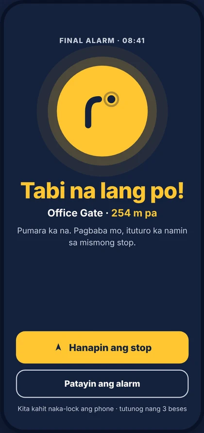
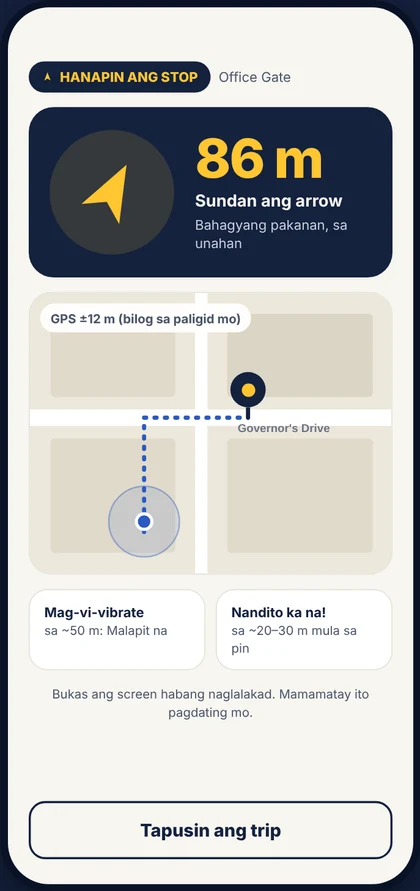

Gigisingin ka na,
ihahatid ka pa.
Matulog nang panatag sa jeep, bus o tren. Gigisingin ka ng TABI bago ang babaan mo, kahit naka-lock ang phone at walang data, at ituturo ka pa hanggang sa mismong stop. A commuter alarm that wakes you before your stop and guides you to the exact spot.


Paano gumagana
Tatlong hakbang lang. Three steps.
Pumili ng babaan
Hanapin sa search, i-pin sa mapa, o pumili sa naka-save mong stops.
Simulan at magpahinga
Pindutin ang Start trip. Gumagana ang TABI kahit naka-lock ang phone at walang data.
Gising at hatid
Malapit ka na! bago ang babaan, Tabi na lang po! pagdating, at gagabayan ka pa hanggang sa mismong stop.
Ginawa para sa commuter na Pinoy
Sinubukan sa totoong biyahe: jeep, bus, motor at lakad.
Walang data? Okay lang
GPS lang ang kailangan. Tumutunog kahit naka-lock ang phone.
Sakay o lakad, alam nito
Kusang lumilipat sa Riding kapag nakasakay ka, para gisingin ka nang mga 2 minuto bago ang babaan.
Lumampas ka? Sasabihan ka
Kung paikot ang daan at nalampasan mo ang stop, may alarm pa rin para hindi ka mapalayo.
Hanapin ang stop
Arrow at layo papunta sa mismong gate o babaan, para sa huling ilang daang metro.
Parating sa TABI 1.0Mga naka-save mong stop
Bahay, Opisina, paaralan: i-lock ang madalas mong babaan at isang tap na lang ang biyahe.
Libre ang alarm
Ang pangunahing alarm ay libre, palagi. Hindi ito ilalagay sa likod ng bayad.
Gawa ng isang Pinoy commuter
Ginagawa ko ang TABI para sa mga commuter na tulad ko: nakakatulog sa biyahe, at minsan lumalampas sa babaan. Sinusubukan namin ito kasama ang mga tester sa araw-araw nilang biyahe, at ibinabahagi namin sa Facebook page ang bawat hakbang.
– Benjie, gumawa ng TABI
Ang sinasabi natin sa driver. Ngayon, may app na para dito.
Maging TABI tester
Libre. Android phone at Gmail lang ang kailangan. Hindi namin hihingin ang password, OTP o bank details mo.